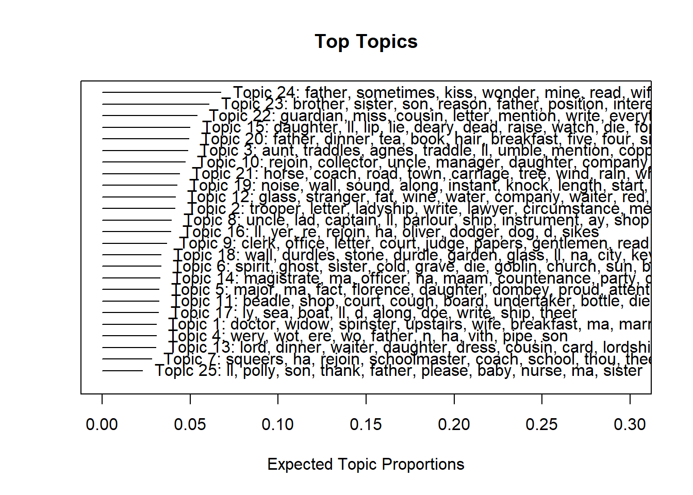
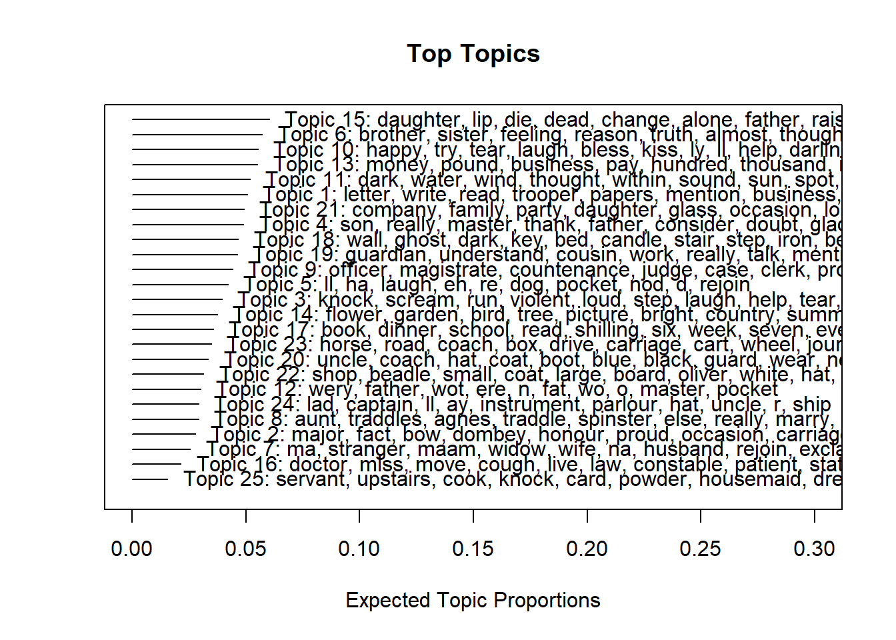

Topic Modelling of Charles Dickens’ novels
Gerold Schneider, Max Lauber
2022-11-15
1 Introduction
This tutorial shows how to perform topic modelling using R. The entire R markdown document for the tutorial can be downloaded here. The tutorial requires you to install and load a couple of packages (also called libraries) to analyze linguistic data. To help you, we directly include the commands to do so in the script and walk you through it step by step.
To be able to follow this tutorial, we suggest you check out and
familiarize yourself with the content of the following tutorials:
- Getting started with R
- Loading, saving, and generating data in R
- String Processing in R
- Regular Expressions in R
- Topic modeling with R
Click here1 to
download the entire R Notebook for this
tutorial.

Click
here
to open an interactive Jupyter notebook that allows you to execute,
change, and edit the code as well as to upload your own data.
1.1 Motivation
There is an incredible amount of text that has been archived all over the world. Probably, there is more text being produced on any given day than a single person can ever hope to read. What are linguists and other language-oriented scholars - be that from perspectives historical, literary, sociological or beyond - going to do with this embarrassment of riches? Change field, focus on a particular niche of language or begin using automated language methods, most likely. If you belong to the latter category, and have yet to acquaint yourself with topic modelling, welcome.
So how does topic modelling help us get to grips with large quantities of texts (or the Great Unread, as Tangherlini and Leonard appropriately call it)? What it certainly does not do, is read or analyze a single sentence, let alone a corpus of texts for you. It is more useful to think of it as “a lens that allows researchers working on a problem to view a relevant textual corpus in a different light and at a different scale” (Mohr and Bogdanov 2013, 560).
1.2 Basic Idea of Topic Modelling
The way topic modelling allows us to engage with large corpora of text by identifying co-occurrence patterns, which, when done right, can yield new perspectives on a set of texts. As such, the methodology is one implementation of the Firthian hypothesis which states that “you shall know a word by the company it keeps” (Firth 1957, 11). Basically, the method exploits the fact that words which frequently appear in a similar context are often representative of the same topic. To arrive at a point where a model allows us to interpret anything meaningful about the topics it captures, we need to mangle the text ever so slightly (to downplay things somewhat): removing proper names, cutting out a lot of fluff, perhaps some chopping up of text.
Sounds like fun, doesn’t it? There is a rationale to all of this, and we will walk through it step by step. Once we arrive at the destination, we will have a list of keywords which represent the topics in some of Charles Dickens’ most lauded works and discuss how they allow us to interpret specific aspects of these novels. This is not the most technical or comprehensive introduction to topic modelling out there, but it provides an actionable instruction to modelling topics in R and points to further resources for those who want to dive in deeper.
1.3 Preparation and Session Setup
As mentioned at the outset, this is an introduction to Topic Modelling based on R. A rudimentary familiarity with R and RStudio are helpful for getting the most out of this. If you have yet to install R or are new to it, we can recommend this introductory tutorial to R or these two chapters from our slow-paced introduction to Statistics for Linguists, which walks you through the installation and shows a range of its functionalities. In the following, we assume that you have downloaded and installed both R and RStudio and take it from there.
1.4 Packages
Topic modelling is pretty package-intense. We won’t go into the
details of what each in this bouquet of packages does, except that each
of them is necessary for topic modelling. If you already have some of
these installed, just skip to the ones that you don’t have yet. Chances
are that you have tried our tutorial on document classification, and are
therefore already familiar with quanteda and
readtext.
If all of these look new, run the following lines of code:
#install.packages("gutenbergr", repos = "http://cran.us.r-project.org")
#install.packages("readtext", repos = "http://cran.us.r-project.org")
#install.packages("quanteda", repos = "http://cran.us.r-project.org")
#install.packages("quanteda.textmodels", repos = "http://cran.us.r-project.org")
#install.packages("tidytext", repos = "http://cran.us.r-project.org")
#install.packages("stm", repos = "http://cran.us.r-project.org")
#install.packages("dplyr", repos = "http://cran.us.r-project.org")
#install.packages("tm", repos = "http://cran.us.r-project.org")
#install.packages("udpipe", repos = "http://cran.us.r-project.org")
#install.packages("data.table", repos = "http://cran.us.r-project.org")
#install.packages("future.apply", repos = "http://cran.us.r-project.org")This may take a minute or three. Installing packages is only necessary once, so if you are working with this script, or your own, you won’t need to run these installation commands more than once. In your script, you can mute a command - basically telling R not to execute it - by placing a #-symbol in front of it, like so:
#install.packagesIn most cases, the installations will work without any issues. If you should get an error message, we recommend taking a moment to read what it says, and, if it does not make any sense to you, to google it. If an issue comes up for you, chances are that this has already happened to someone else - and, fortunately, the R community has a pretty good track record of responding to questions about technical issues. Generally, it is also a good idea to use a relatively new version of R. If you have last used R two years ago, do update it.
Once you have installed the packages, you’ll need to load them in the current session. This is done with the following lines of code:
library(gutenbergr)
library(readtext)
library(quanteda)
library(quanteda.textmodels)
library(tidytext)
library(stm)
library(dplyr)
library(tm)
library(udpipe)
library(data.table)
library(future.apply)1.5 Installing a language model
Now that all of the packages are loaded, we need to download and then activate a language model so that we can part-of-speech tag the data. Downloading the model only takes a single line of code:
meng <- udpipe::udpipe_download_model(language = "english-ewt")Once the installation process is finished, we can initialize the model which will allow R to use the language model. For this, we use:
m_eng <- udpipe_load_model(file = here::here("udpipemodels", "english-ewt-ud-2.5-191206.udpipe"))With that, we have the computational prerequisites to generate topic models in R. All we need now is data.
1.6 Research Questions
For this, we turn to the literary vaults to dust off one of the greats: Charles Dickens. Beyond and within Christmas fables, Dickens is famous for his social criticism, especially the way he treated the topic of poverty and developed visions for including the poor inside society [see for example Kailash (2012) or Mahlberg (2013)). Dickens is generally considered exemplary for his literary realism, which he employed with no small success to depict the plight of inequality and poverty. There is more to Dickens than that, but it gives us a duplette of research questions:
Can we use topic modelling to bring Dickens’ social criticism to the fore, without the heavy lifting of actually reading his books?
Can we use topic modelling to explore the rich imagery that Dickens constructs with his literary realism?
To explore these questions, we will construct a small corpus, consisting of eight Dickens novels. These are:
- Christmas Carol
- Tale of Two Cities
- The Pickwick Papers
- Oliver Twist
- David Copperfield
- Hard Times
- Nicholas Nickleby
- Great Expectations
2 Data: Gutenberg
Beyond the fact that his is a renowned style and perspective, Dickens is convenient to work with because his work is old enough to be part of the public domain. This means that the eight novels we are looking at can be downloaded entirely legally from Project Gutenberg. There is a specific tutorial for different ways of integrating Gutenberg into R, but we’ll walk you through one approach anyway.
First, we can check out which of Dickens’ texts are available on Gutenberg:
dickens <- gutenberg_works(author == "Dickens, Charles")The command accesses a table of Gutenberg work metadata, in this case specifically only for works authored by one Dickens, Charles”. We save this table to a variable called, tellingly, dickens”. Let’s take a look at it:
dickens## # A tibble: 78 × 8
## gutenberg_id title author gutenberg_author_id language gutenberg_bookshelf
## <int> <chr> <chr> <int> <chr> <chr>
## 1 46 "A Chri… Dicke… 37 en Children's Literat…
## 2 98 "A Tale… Dicke… 37 en Historical Fiction
## 3 564 "The My… Dicke… 37 en Mystery Fiction
## 4 580 "The Pi… Dicke… 37 en Best Books Ever Li…
## 5 588 "Master… Dicke… 37 en <NA>
## 6 644 "The Ha… Dicke… 37 en Christmas
## 7 650 "Pictur… Dicke… 37 en <NA>
## 8 653 "The Ch… Dicke… 37 en <NA>
## 9 675 "Americ… Dicke… 37 en <NA>
## 10 676 "The Ba… Dicke… 37 en Christmas
## # ℹ 68 more rows
## # ℹ 2 more variables: rights <chr>, has_text <lgl>At first glance, we can see that there are 74 texts by Dickens on Gutenberg, and that to each of these texts there is some metadate like the Gutenberg ID, the language, the rights. This information is stored in a tibble, an object that does not cram the console with its entire length, but actually stops itself at ten rows. While this is helpful in situations where you have millions of rows, here it is more hindrance than help - we see some of the texts we’re looking for, but not all of them. To display all of the rows and find our texts, we need the output to display all 74 rows. This can be achieved like so:
print(dickens, n=74)## # A tibble: 78 × 8
## gutenberg_id title author gutenberg_author_id language gutenberg_bookshelf
## <int> <chr> <chr> <int> <chr> <chr>
## 1 46 "A Chri… Dicke… 37 en Children's Literat…
## 2 98 "A Tale… Dicke… 37 en Historical Fiction
## 3 564 "The My… Dicke… 37 en Mystery Fiction
## 4 580 "The Pi… Dicke… 37 en Best Books Ever Li…
## 5 588 "Master… Dicke… 37 en <NA>
## 6 644 "The Ha… Dicke… 37 en Christmas
## 7 650 "Pictur… Dicke… 37 en <NA>
## 8 653 "The Ch… Dicke… 37 en <NA>
## 9 675 "Americ… Dicke… 37 en <NA>
## 10 676 "The Ba… Dicke… 37 en Christmas
## 11 678 "The Cr… Dicke… 37 en Children's Literat…
## 12 699 "A Chil… Dicke… 37 en Children's History…
## 13 700 "The Ol… Dicke… 37 en <NA>
## 14 730 "Oliver… Dicke… 37 en <NA>
## 15 766 "David … Dicke… 37 en Harvard Classics
## 16 786 "Hard T… Dicke… 37 en <NA>
## 17 807 "Hunted… Dicke… 37 en Detective Fiction
## 18 809 "Holida… Dicke… 37 en Children's Picture…
## 19 810 "George… Dicke… 37 en <NA>
## 20 821 "Dombey… Dicke… 37 en <NA>
## 21 824 "Speech… Dicke… 37 en <NA>
## 22 872 "Reprin… Dicke… 37 en <NA>
## 23 882 "Sketch… Dicke… 37 en <NA>
## 24 883 "Our Mu… Dicke… 37 en <NA>
## 25 912 "Mudfog… Dicke… 37 en <NA>
## 26 914 "The Un… Dicke… 37 en <NA>
## 27 916 "Sketch… Dicke… 37 en <NA>
## 28 917 "Barnab… Dicke… 37 en Historical Fiction
## 29 918 "Sketch… Dicke… 37 en <NA>
## 30 922 "Sunday… Dicke… 37 en <NA>
## 31 924 "To Be … Dicke… 37 en <NA>
## 32 927 "The La… Dicke… 37 en <NA>
## 33 963 "Little… Dicke… 37 en <NA>
## 34 967 "Nichol… Dicke… 37 en <NA>
## 35 968 "Martin… Dicke… 37 en Best Books Ever Li…
## 36 1023 "Bleak … Dicke… 37 en <NA>
## 37 1289 "Three … Dicke… 37 en <NA>
## 38 1392 "The Se… Dicke… 37 en <NA>
## 39 1394 "The Ho… Dicke… 37 en <NA>
## 40 1400 "Great … Dicke… 37 en Best Books Ever Li…
## 41 1406 "The Pe… Dicke… 37 en <NA>
## 42 1407 "A Mess… Dicke… 37 en <NA>
## 43 1413 "Tom Ti… Dicke… 37 en <NA>
## 44 1414 "Somebo… Dicke… 37 en <NA>
## 45 1415 "Doctor… Dicke… 37 en <NA>
## 46 1416 "Mrs. L… Dicke… 37 en <NA>
## 47 1419 "Mugby … Dicke… 37 en <NA>
## 48 1421 "Mrs. L… Dicke… 37 en <NA>
## 49 1422 "Going … Dicke… 37 en <NA>
## 50 1435 "Miscel… Dicke… 37 en <NA>
## 51 1465 "The Wr… Dicke… 37 en <NA>
## 52 1467 "Some C… Dicke… 37 en Christmas
## 53 19337 "A Chri… Dicke… 37 en Children's Literat…
## 54 20795 "The Cr… Dicke… 37 en Children's Literat…
## 55 23344 "The Ma… Dicke… 37 en Children's Picture…
## 56 23452 "The Tr… Dicke… 37 en Children's Picture…
## 57 23765 "Captai… Dicke… 37 en Children's Picture…
## 58 25852 "The Le… Dicke… 37 en <NA>
## 59 25853 "The Le… Dicke… 37 en <NA>
## 60 25854 "The Le… Dicke… 37 en <NA>
## 61 30368 "A Chri… Dicke… 37 en <NA>
## 62 32241 "Dicken… Dicke… 37 en <NA>
## 63 35536 "The Po… Dicke… 37 en <NA>
## 64 37121 "Charle… Dicke… 37 en <NA>
## 65 40723 "The Ba… Dicke… 37 en <NA>
## 66 42232 "A Chil… Dicke… 37 en <NA>
## 67 43111 "The Pe… Dicke… 37 en <NA>
## 68 43207 "Scenes… Dicke… 37 en <NA>
## 69 46675 "Oliver… Dicke… 37 en <NA>
## 70 47529 "Oliver… Dicke… 37 en <NA>
## 71 47530 "Oliver… Dicke… 37 en <NA>
## 72 47531 "Oliver… Dicke… 37 en <NA>
## 73 47534 "The Po… Dicke… 37 en <NA>
## 74 47535 "The Po… Dicke… 37 en <NA>
## # ℹ 4 more rows
## # ℹ 2 more variables: rights <chr>, has_text <lgl>Now we have the complete output, we can go and identify the IDs of the works we’re interested in. We find that:
- 46 = A Christmas Carol
- 98 = A Tale of Two Cities
- 580 = The Pickwick Papers
- 730 = Oliver Twist
- 766 = David Copperfield
- 786 = Hard Times
- 967 = Nicholas Nickleby
- 1400 = Great Expectations
We could either download each of the texts individually, but that
would be a hassle. Instead, we can save all of the ID numbers in a new
variable, which we’ll call list_dickens:
list_dickens <- c(46, 98, 580, 730, 766, 786, 967, 1400)This allows us to download all of the texts in one go:
dickens_corpus <- gutenberg_download(list_dickens, meta_fields = "title")## Determining mirror for Project Gutenberg from https://www.gutenberg.org/robot/harvest## Using mirror http://aleph.gutenberg.orgWith this, we download the eight novels, saving them to a data frame with one row per line per work, as well as the additional metadata of the title of each work. If one were working with works by different authors, it might make sense to include the author names - but since we don’t, we won’t.
Taking a look at the dickens_corpus object is not yet
very meaningful:
dickens_corpus## # A tibble: 182,668 × 3
## gutenberg_id text title
## <int> <chr> <chr>
## 1 46 "A CHRISTMAS CAROL" A Christmas Carol in Prose; Being …
## 2 46 "" A Christmas Carol in Prose; Being …
## 3 46 "IN PROSE" A Christmas Carol in Prose; Being …
## 4 46 "BEING" A Christmas Carol in Prose; Being …
## 5 46 "A Ghost Story of Christmas" A Christmas Carol in Prose; Being …
## 6 46 "" A Christmas Carol in Prose; Being …
## 7 46 "by Charles Dickens" A Christmas Carol in Prose; Being …
## 8 46 "" A Christmas Carol in Prose; Being …
## 9 46 "" A Christmas Carol in Prose; Being …
## 10 46 "" A Christmas Carol in Prose; Being …
## # ℹ 182,658 more rowsWe can see the title of A Christmas Carol, with one line per row, but beyond that, not yet too much. So let’s get to the data processing that will allow us to do a bit of meaningful work with these texts.
3 Data Processing
Now that we have loaded the data, we need to prepare it for the analysis (the topic modelling). The following section(s) describe and go through the various data processing steps such as cleaning and transformation.
3.1 Pre-Processing, Part 1
The first step of the pre-processing requires us to transform the
texts we stored under dickens_corpus and clean it by
removing empty text elements using the filter() function
from the dplyr package. Then, we replace sentence
punctuation marks (.?!) with the sequence “qwerty”. Next, we group the
data by title using group_by() (also a function from the
dplyr package) and we then we reframe the data so that each
row represents one sentence. During the reframing, we split the text
into sentences by splitting the text by the “qwerty” sequence we just
added, we remove upper case sequences, and we remove upper case letters
except for capital i (I). This should result in a table where
each sentence represents one row.
dickens_corpus %>%
dplyr::filter(text != "") %>%
dplyr::mutate(text = stringr::str_replace_all(text, "([[:digit:][:lower:]])((\\.|\\?\\!))", "\\1\\2qwerty")) %>%
dplyr::group_by(title) %>%
dplyr::reframe(text = paste0(text, collapse = " "),
text = unlist(strsplit(text, "qwerty")),
text = stringr::str_remove_all(text, "[:upper:]{2,}"),
text = stringr::str_replace_all(text, " [A:H,J:Z] ", " "),
text = stringr::str_squish(text)) -> dickens_corpusTo check if the splitting into sentences has worked, let’s have a
look at the transformed dickens_corpus:
head(dickens_corpus$text, 10)## [1] "A Ghost Story of Christmas by Charles Dickens I endeavoured in this Ghostly little book, to raise the Ghost of an Idea, which shall not put my readers out of humour with themselves, with each other, with the season, or with me."
## [2] "May it haunt their houses pleasantly, and no one wish to lay it."
## [3] "Their faithful Friend and Servant, C. D. December, 1843."
## [4] "Stave I: Marley's Ghost Stave The First of the Three Spirits Stave The Second of the Three Spirits Stave The Last of the Spirits Stave V: The End of It I: 'S was dead: to begin with."
## [5] "There is no doubt whatever about that."
## [6] "The register of his burial was signed by the clergyman, the clerk, the undertaker, and the chief mourner."
## [7] "Scrooge signed it: and Scrooge's name was good upon 'Change, for anything he chose to put his hand to."
## [8] "Old Marley was as dead as a door-nail."
## [9] "Mind! I don't mean to say that I know, of my own knowledge, what there is particularly dead about a door-nail."
## [10] "I might have been inclined, myself, to regard a coffin-nail as the deadest piece of ironmongery in the trade."As we can see, we are left with a data frame consisting of many rows and 2 columns with each row representing one sentence. Unfortunately, the sentence tokenisation has not worked perfectly as we see that in the first row, the title and author (A Ghost Story of Christmas by Charles Dickens) it still attached to the first sentence.
To get a sense of the current structure of the corpus, we can take a look at the titles, in the form of a table:
table(dickens_corpus$title)##
## A Christmas Carol in Prose; Being a Ghost Story of Christmas
## 1419
## A Tale of Two Cities
## 6525
## David Copperfield
## 17792
## Great Expectations
## 8363
## Hard Times
## 5778
## Nicholas Nickleby
## 14763
## Oliver Twist
## 8017
## The Pickwick Papers
## 19120This command builds a contingency table, basically counting how many documents in the corpus are associated with each title. This shows us, on the one hand, how different in length the different novels are. On the other hand, it allows us to see what we already caught a hint of above: each sentence gets its own row in the corpus. While this is not an issue for some approaches of text analysis, for topic modelling it will present a problem - one that we’ll root out, but only at a later stage of the pre-processing.
3.2 Parsing the Corpus
The next step is an essential, but also a computationally intense one: we are going to parse the corpus. This is where we get the corpus ready for topic modelling.
Before we go into the what and why of parsing, we suggest you initiate the process - it can take a while (depending on how good your device’s computing power is - it takes 1 hour and 6 seconds on my laptop):
Because it takes so long, we suggest you do not execute the
following chunk but load the already processed data (as shown in the
loading chunk following the parsing chunk).
# parsing
dickens_corpus$text %>%
# pos-tagging
udpipe::udpipe_annotate(m_eng, x = .) %>%
# convert into data frame
as.data.frame() %>%
# remove sentence variable and save
dplyr::select(-sentence) -> dickens_parsedExecute the following chunk to load the already parsed data!
# loading
# you can directly load the parsed dickens data by executing this chunk
dickens_parsed <- base::readRDS(url("https://slcladal.github.io/data/dickens_parsed.rda", "rb"))As you see, we take the text variable of the
dickens_corpus, split it into sentences using the
tokenize_sentence() function from the quanteda
transform it with the command spacy_parse and assign it to
a new variable, dickens_parsed. What the command does is
tokenize and tag the texts, returning a data-table of the result. The
corpus is thus transformed from an object that has a sentence in each
row, to one where each word has its own row. More importantly, though,
each word is assigned a part of speech tag. Parsing text with udpipe
also include lemmatization and more complex tags like noun phrases, but
for our purposes, part of speech tags give enough information.
Once the parsing process is finished, we can terminate the Python process that we initiated above, since it uses up a lot of memory in the background:
Now, let’s take a look at the structure of our new variable,
dickens_parsed:
str(dickens_parsed)## 'data.frame': 1990092 obs. of 13 variables:
## $ doc_id : chr "doc1" "doc1" "doc1" "doc1" ...
## $ paragraph_id : int 1 1 1 1 1 1 1 1 1 1 ...
## $ sentence_id : int 1 1 1 1 1 1 1 1 1 1 ...
## $ token_id : chr "1" "2" "3" "4" ...
## $ token : chr "A" "Ghost" "Story" "of" ...
## $ lemma : chr "a" "Ghost" "story" "of" ...
## $ upos : chr "DET" "ADJ" "NOUN" "ADP" ...
## $ xpos : chr "DT" "JJ" "NN" "IN" ...
## $ feats : chr "Definite=Ind|PronType=Art" "Degree=Pos" "Number=Sing" NA ...
## $ head_token_id: chr "3" "3" "10" "5" ...
## $ dep_rel : chr "det" "amod" "nsubj" "case" ...
## $ deps : chr NA NA NA NA ...
## $ misc : chr NA NA NA NA ...We are now dealing with a data frame that contains 1,996,275 observations (rows) of 7 variables (columns). Roughly two million words for eight novels sounds about right. Of course, if we want to be sure that we didn’t lose anything on the way thus far, we could go back to the Gutenberg information to see whether we have the correct amount of words. But we’ll carry on with the assumption that everything worked fine so far.
The structure of the parsed corpus is very different from the structure of the corpus as it was before. Among the columns, we find the doc-, sentence- and token-ids, the tokens and their lemma, the part of speech tag and the entity. Most of this, we will ignore for the current purpose. What we need to get the corpus into processable form are the part of speech tags.
So let’s look at the first few entries:
head(dickens_parsed, n=15)## doc_id paragraph_id sentence_id token_id token lemma upos xpos
## 1 doc1 1 1 1 A a DET DT
## 2 doc1 1 1 2 Ghost Ghost ADJ JJ
## 3 doc1 1 1 3 Story story NOUN NN
## 4 doc1 1 1 4 of of ADP IN
## 5 doc1 1 1 5 Christmas Christmas PROPN NNP
## 6 doc1 1 1 6 by by ADP IN
## 7 doc1 1 1 7 Charles Charles PROPN NNP
## 8 doc1 1 1 8 Dickens Dickens PROPN NNPS
## 9 doc1 1 1 9 I I PRON PRP
## 10 doc1 1 1 10 endeavoured endeavoure VERB VBD
## 11 doc1 1 1 11 in in ADP IN
## 12 doc1 1 1 12 this this PRON DT
## 13 doc1 1 1 13 Ghostly ghostly ADV RB
## 14 doc1 1 1 14 little little ADJ JJ
## 15 doc1 1 1 15 book book NOUN NN
## feats head_token_id dep_rel deps
## 1 Definite=Ind|PronType=Art 3 det <NA>
## 2 Degree=Pos 3 amod <NA>
## 3 Number=Sing 10 nsubj <NA>
## 4 <NA> 5 case <NA>
## 5 Number=Sing 3 nmod <NA>
## 6 <NA> 7 case <NA>
## 7 Number=Sing 5 nmod <NA>
## 8 Number=Plur 7 flat <NA>
## 9 Case=Nom|Number=Sing|Person=1|PronType=Prs 10 nsubj <NA>
## 10 Mood=Ind|Tense=Past|VerbForm=Fin 0 root <NA>
## 11 <NA> 12 case <NA>
## 12 Number=Sing|PronType=Dem 10 obl <NA>
## 13 <NA> 14 advmod <NA>
## 14 Degree=Pos 15 amod <NA>
## 15 Number=Sing 10 obj <NA>
## misc
## 1 <NA>
## 2 <NA>
## 3 <NA>
## 4 <NA>
## 5 <NA>
## 6 <NA>
## 7 <NA>
## 8 <NA>
## 9 <NA>
## 10 <NA>
## 11 <NA>
## 12 <NA>
## 13 <NA>
## 14 <NA>
## 15 SpaceAfter=NoIn these 15 rows we already see both the uses and the drawbacks of what we are about to do. In rows 13 and 14 we find the words Charles and Dickens, respectively. These get identified correctly as proper nouns. Looking at rows 3 and 5, however, we see that also Christmas and Carol get identified as proper nouns (PROPN in the upos column). While Carol is a name, here it clearly does not refer to a person, but to a type of music that was typically sung around Christmas in the olden days. The reason for the mislabelling of these words is rather, ahem, prosaic: as part of the title, they are both spelt with capital letters, which to the parser indicates that they are proper nouns. And the reason this presents a problem is because we are going to remove all proper nouns.
If you respect the integrity of books (as we of course do too, under most circumstances), you might be cringing at this point. Why would we ruthlessly mangle texts like that?
3.3 Topic Modelling and the Purposes of Parsing
The concept of topic modelling is based on the Firthian hypothesis that “you shall know a word by the company it keeps” (Firth 1957, 11). When applying topic modelling to a corpus of text, we exploit the fact that words which frequently occur in similar contexts are representative of the same topic. One of the most common techniques to construct topic models is the latent Dirichlet allocation (LDA). The LDA
derives word clusters using a generative statistical process that begins by assuming that each document in a collection of documents is constructed from a mix of some set of possible topics. The model then assigns high probabilities to words and sets of words that tend to co-occur in multiple contexts across the corpus. (Jockers 2013, 123)
The algorithm we will use in a minute is called STM, which stands for Structural Topic Model. STM is very similar to LDA, but in addition to what the LDA does, STM is capable of processing meta-information about texts, such as the author or the date on which a document was produced. More details about STM are available in Roberts, Stewart, and Tingley (2019).
The output of a topic modelling process most frequently comes as a set of words that co-occur in multiple contexts across the corpus. This understanding of the process reveals why, in this case, we choose to remove the proper nouns: in the context of novels, proper nouns are mostly names of characters and locations - and these names and locations tend to co-occur mostly within novels. The upshot of which is that the model latches onto these distinct proper nouns, which display a pattern that is much more consistent than any other co-occurrence patterns in the corpus, thus crowding out other patterns that are actually helpful when it comes to answering our research questions on social criticism and literary realism in Dickens.
Picking up where we left off with the pre-processing, there is perhaps a question to be answered regarding the misidentification of Carol as a proper noun. If we see something like that, shouldn’t we make sure that we at least keep these terms in, since this is obviously not the type of word we want to get rid of when we remove the proper nouns from the corpus?
Well, no. For two reasons: firstly, when pre-processing large quantities of text, there are always going to be some inaccuracies. The relative merits of keeping in individual tokens that we see are misidentified are, for all intents and purposes, irrelevant when we are dealing with corpora that contain millions of words. Secondly, and probably more importantly, going in and manually adjusting for individual tokens make the process a lot less reproducible. Obviously, it depends on the purpose of a project, but generally we don’t only want to produce research, but produce it in such a way that anyone can reproduce it (if they set their mind to it). Instead of going in and fixing individual mislabellings, it’s a lot more useful to make sure that each step of the research project is comprehensible to someone not involved in the process.
That being said, if you end up with a topic model that is hard to make sense of, and you have reason to believe that this is the result of unsatisfactory pre-processing, it’s generally worthwhile to reflect on each of the pre-processing steps, rather than going in and fixing individual instances. We actually ended up doing some of the former for this project, as we will detail below.
3.4 Pre-Processing, Part 2
With the parsed corpus, as well as an understanding of how topic modelling works, let’s proceed with the pre-processing.
3.5 Removing Proper Nouns
First off, we remove the proper nouns:
no_prop_dickens <- dickens_parsed %>%
dplyr::filter( upos != "PROPN")We define a new variable, no_prop_dickens, and assign to
it the parsed Dickens corpus without the proper nouns. Specifically, we
assign all tokens which have not been tagged as proper nouns to the new
variable. The logical operator != stands for
not equal to, thus allowing us to retain everything that is
not a proper noun.
Which, if we look at the number of rows the new variable contains, turns out be most of the corpus:
nrow(no_prop_dickens)## [1] 1916359We get 1,916,359 rows, which means that only roughly 88,000 tokens had been classified as proper nouns. While this sounds like a lot in absolute terms, it only amounts to about 4.4% of the corpus. Considering how much of an improvement this is for the final model, it’s an absolutely acceptable price to pay.
It’s also worth checking briefly whether it was actually successful at removing what we wanted to remove:
head(no_prop_dickens, n=15)## doc_id paragraph_id sentence_id token_id token lemma upos xpos
## 1 doc1 1 1 1 A a DET DT
## 2 doc1 1 1 2 Ghost Ghost ADJ JJ
## 3 doc1 1 1 3 Story story NOUN NN
## 4 doc1 1 1 4 of of ADP IN
## 5 doc1 1 1 6 by by ADP IN
## 6 doc1 1 1 9 I I PRON PRP
## 7 doc1 1 1 10 endeavoured endeavoure VERB VBD
## 8 doc1 1 1 11 in in ADP IN
## 9 doc1 1 1 12 this this PRON DT
## 10 doc1 1 1 13 Ghostly ghostly ADV RB
## 11 doc1 1 1 14 little little ADJ JJ
## 12 doc1 1 1 15 book book NOUN NN
## 13 doc1 1 1 16 , , PUNCT ,
## 14 doc1 1 1 17 to to PART TO
## 15 doc1 1 1 18 raise raise VERB VB
## feats head_token_id dep_rel deps
## 1 Definite=Ind|PronType=Art 3 det <NA>
## 2 Degree=Pos 3 amod <NA>
## 3 Number=Sing 10 nsubj <NA>
## 4 <NA> 5 case <NA>
## 5 <NA> 7 case <NA>
## 6 Case=Nom|Number=Sing|Person=1|PronType=Prs 10 nsubj <NA>
## 7 Mood=Ind|Tense=Past|VerbForm=Fin 0 root <NA>
## 8 <NA> 12 case <NA>
## 9 Number=Sing|PronType=Dem 10 obl <NA>
## 10 <NA> 14 advmod <NA>
## 11 Degree=Pos 15 amod <NA>
## 12 Number=Sing 10 obj <NA>
## 13 <NA> 10 punct <NA>
## 14 <NA> 18 mark <NA>
## 15 VerbForm=Inf 10 advcl <NA>
## misc
## 1 <NA>
## 2 <NA>
## 3 <NA>
## 4 <NA>
## 5 <NA>
## 6 <NA>
## 7 <NA>
## 8 <NA>
## 9 <NA>
## 10 <NA>
## 11 <NA>
## 12 SpaceAfter=No
## 13 <NA>
## 14 <NA>
## 15 <NA>The first fifteen rows certainly indicate a success: gone is Christmas and Carol, gone is Charles and Dickens. Certain other features that are also not helpful for interpreting the content of the corpus currently remain, most prominently punctuation. Let’s take care of this.
3.6 Tokenizing the Text
The first step is tokenizing the no_prop_dickens and
removing punctuation and non-alphanumeric characters:
no_prop_dickens %>%
dplyr::group_by(sentence_id) %>%
dplyr::summarise(sen = paste0(lemma, collapse = " ")) %>%
dplyr::pull(sen) %>%
#tokenisation
quanteda::tokenize_sentence() %>%
unlist() %>%
# remove non-word alpha-numeric characters
stringr::str_remove_all("[^[:alnum:] ]") %>%
# remiove possessive s
stringr::str_replace_all(" s ", " ") %>%
# convert to lower case
tolower() -> toksWe assign the contents of the no_prop_dickens object a
new variable toks, coercing the contents into a token
object. With this, we get rid of a lot of excess information that is not
relevant for the next steps. Let’s take a look:
head(toks, n=10)## [1] "a ghost story of by i endeavoure in this ghostly little book to raise the ghost of a idea which shall not put my reader out of humour with themselves with each other with the season or with i may it haunt they house pleasantly and no one wish to lay it they faithful friend and 1843 "
## [2] "stave i ghost there be no doubt whatever about that the register of he burial be sign by the clergyman the clerk the undertaker and the chief mourner sign it and name be good upon for anything he choose to put he hand to be as dead as a door nail mind "
## [3] "i might have be inclin myself to regard a coffin nail as the deadest piece of ironmongery in the trade but the wisdom of we ancestor be in the simile and my unhallowed hand shall not disturb it or the country do for you will therefore permit i to repeat emphatically that be as dead as a door nail know he be dead "
## [4] "how could it be otherwise "
## [5] "be he sole executor he sole administrator he sole assign he sole residuary legatee he sole friend and sole mourner and even be not so dreadfully cut up by the sad event but that he be a excellent man of business on the very day of the funeral and solemnise it with a undoubted bargain the mention of funeral bring i back to the point i start from there be no doubt that be dead this must be distinctly understand or nothing wonderful can come of the story i be go to relate if we be not perfectly convince that die before the play begin there would be nothing more remarkable in he take a stroll at night in a easterly wind upon he own rampart than there would be in any other middle a gentleman rashly turn out after dark in a breezy spot say for instance literally to astonish he son weak mind never paint out name there it stand year afterwards above the warehouse door and the firm be know as and sometimes people new to the business call and sometimes but he answer to both name it be all the same to he oh "
## [6] "the cold within he froze he old feature nip he point nose shrivell he cheek stiffen he gait make he eye red he thin lip blue and speak out shrewdly in he grating voice frosty rime be on he head and on he eyebrow and he wiry ching he carry he own low temperature always about with he he ice he office in the dog day and do not thaw it one degree at external heat and could have little influence on no warmth could warm no wintry weather chill he no wind that blew be bitterer than he no falling snow be more intent upon its purpose no pelting rain less open to entreaty "
## [7] "foul weather do not know where to have he the heaviest rain and snow and hail and sleet could boast of the advantage over he in only one respect they often come down handsomely and never do nobody ever stop he in the street to say with gladsome look my dear scrooge how be you "
## [8] "even the blind man dog appear to know he and when they see he come on would tug they owner into doorway and up court and then would wag they tail as though they say no eye at all be better than a evil eye dark master "
## [9] " to edge he way along the crowded path of life warn all human sympathy to keep its distance be what the know one call nut to once upon a time of all the good day in the year on old sit busy in he counting house it be cold bleak biting weather foggy withal and he could hear the people in the court outside go wheeze up and down beat they hand upon they breast and stampe they foot upon the pavement stone to warm they the city clock have only just go three but it be quite dark already it have not be light all day and candle be flar in the window of the neighbour office like ruddy smear upon the palpable brown air the fog come pour in at every chink and keyhole and be so dense without that although the court be of the narrowest the house opposite be mere phantoms to see the dingy clould come droope down obscur everything one might have think that liv hard by and be brew on a large scale the door of counting house be open that he might keep he eye upon he clerk who in a dismal little cell beyond a sort of tank be copying letter have a very small fire but the clerk fire be so very much smaller that it look like one coal but he could not replenish it for keep the coal box in he own room and so surely as the clerk come in with the shovel the master predict that it would be necessary for they to part "
## [10] "wherefore the clerk put on he white comforter and try to warm himself at the candle in which effort not be a man of a strong imagination he fail a merry uncle "The corpus now looks a lot like it did before we started with the pre-processing: we see that again each sentence occupies one document. The obvious difference is that all the proper nouns are gone - as we intended.
3.7 Punctuation
Our next target is to transform the toks object into a
tokens object again (yes, it already is one), but this time we add
logical conditions which state remove_punct = TRUE,
remove_symbols = TRUE, and
remove_numbers = TRUE:
toks <- tokens(toks, remove_punct = TRUE, remove_symbols = TRUE, remove_numbers = TRUE)Again, a quick check to see if it worked:
head(toks, n=15)## Tokens consisting of 15 documents.
## text1 :
## [1] "a" "ghost" "story" "of" "by"
## [6] "i" "endeavoure" "in" "this" "ghostly"
## [11] "little" "book"
## [ ... and 44 more ]
##
## text2 :
## [1] "stave" "i" "ghost" "there" "be" "no"
## [7] "doubt" "whatever" "about" "that" "the" "register"
## [ ... and 40 more ]
##
## text3 :
## [1] "i" "might" "have" "be" "inclin" "myself" "to" "regard"
## [9] "a" "coffin" "nail" "as"
## [ ... and 51 more ]
##
## text4 :
## [1] "how" "could" "it" "be" "otherwise"
##
## text5 :
## [1] "be" "he" "sole" "executor"
## [5] "he" "sole" "administrator" "he"
## [9] "sole" "assign" "he" "sole"
## [ ... and 186 more ]
##
## text6 :
## [1] "the" "cold" "within" "he" "froze" "he" "old"
## [8] "feature" "nip" "he" "point" "nose"
## [ ... and 103 more ]
##
## [ reached max_ndoc ... 9 more documents ]Comparing this latest output to the one preceding it, we find that the comma, which was in the last position, has disappeared. We are getting closer.
3.8 Stopwords
The final of these smaller pre-processing steps, which are all commonly applied with a lot of automated text analysis, is the removal of stopwords. These are words which are very common, to a degree that one can assume that they will show up on practically every page of a book, thus making it harder for our model to identify more salient and content-related co-occurrence patterns.
Stopwords are typically also words that have no little semantic meaning on their own, for example the, in, etc. As they rather regulate the relations between words, they are also called function words (as opposed to content words, which we want to keep). There is no universal list of stopwords - and some methods make do without removing stopwords - but for our purposes, it makes sense to just work with the default list supplied in the quanteda package. The command is as follows:
toks <- toks %>%
# remove stopwords
tokens_remove(pattern = stopwords("english")) Looking at the first few lines shows that this, too, worked:
head(toks, n=15)## Tokens consisting of 15 documents.
## text1 :
## [1] "ghost" "story" "endeavoure" "ghostly" "little"
## [6] "book" "raise" "ghost" "idea" "shall"
## [11] "put" "reader"
## [ ... and 11 more ]
##
## text2 :
## [1] "stave" "ghost" "doubt" "whatever" "register"
## [6] "burial" "sign" "clergyman" "clerk" "undertaker"
## [11] "chief" "mourner"
## [ ... and 12 more ]
##
## text3 :
## [1] "might" "inclin" "regard" "coffin" "nail"
## [6] "deadest" "piece" "ironmongery" "trade" "wisdom"
## [11] "ancestor" "simile"
## [ ... and 15 more ]
##
## text4 :
## [1] "otherwise"
##
## text5 :
## [1] "sole" "executor" "sole" "administrator"
## [5] "sole" "assign" "sole" "residuary"
## [9] "legatee" "sole" "friend" "sole"
## [ ... and 79 more ]
##
## text6 :
## [1] "cold" "within" "froze" "old" "feature" "nip"
## [7] "point" "nose" "shrivell" "cheek" "stiffen" "gait"
## [ ... and 49 more ]
##
## [ reached max_ndoc ... 9 more documents ]We are left with rather fewer words than before, but the ones that remain are the ones which could be relevant for our research question.
3.9 Chunks
The next challenge is the structure in which Gutenberg supplies its texts: each sentence occupies one row. In order to arrive at interpretable results, we need to get chunks of text that are long enough to contain co-occurrences of words, and we need to get enough of them in order for the LDA to be able identify patterns of co-occurrences throughout the corpus. Sentences are too short for this, and with only eight novels, dividing the corpus into books would not yield good results because there are not enough different texts in which to observe co-occurrence patterns.
This leaves two options: dividing the corpus along chapters, or simply creating chunks of a certain length. It is the latter approach we are pursuing here, for three reasons: reconstructing the corpus along chapters is technically somewhat more involved; on top of that, a chapter may still be so long that the topic changes considerably for the beginning of the chapter to the end; finally, you might be interested in working with texts from a different source than Gutenberg, and the approach to chunking that we use here will work for most textual data, regardless of the source.
We begin by unraveling these documents into an object that contains a
single token per row. The command unlist() allows us to do
this, as it produces a vector which contains all the atomic components
that occur in an object.
list_toks <- unlist(toks, use.names = F)Now, we basically have Dickens novels as a long list of individual words, without a proper name:
head(list_toks, n=15)## [1] "ghost" "story" "endeavoure" "ghostly" "little"
## [6] "book" "raise" "ghost" "idea" "shall"
## [11] "put" "reader" "humour" "season" "may"Now, we are faced with choosing the size of the text chunks we want to feed into our model. There is no best practice of how to choose the chunk size, which means that there is some trial and error involved here. Basically we want chunks that are large enough to allow for meaningful co-occurrences to be observed, but small enough that co-occurrences that get identified by the model are meaningful in some way. One way to get there is to use paragraphs, as they are a meaningful unit of discourse. But we do not have paragraphs in our corpus.
The heuristic we chose to start from is that two pages of a novel should contain a bunch of words relating to a similar theme - thinking for instance of descriptions of a space or person. As the average A5 page contains roughly 500 words, we started out with chunk sizes of 1,000 words.
However, it is very much a process of trial and error as to what chunk size yields the best results. We played around with a bunch of plausible sizes - plausible in the sense that, for instance, only half a page is roughly the lower bound on which to expect co-occurrences. Thus, we tried different versions between 250 and 5000 words, and we will explore different chunk sizes in this range together in what follows.
Once we decide on where to start, we simply define the chunk size:
chunk <- 1000Next, we assign the length of our corpus to a new variable:
n <- length(list_toks)We now have two variables, chunk and n
which simply contain a number each. With these, we define a new
object:
r <- rep(1:ceiling(n/chunk), each = chunk)[1:n]This takes a bit of unpacking. The rep() function
replicates the values in the brackets. But what are we feeding it there?
The centerpiece is in the fraction n/chunk, a simple
calculation which states that, given the length (n) of our corpus, if we
want chunks of 1,000 words each, there will be 717 chunks. We set this
value (716.412, to be precise) as the ceiling. In effect, we are setting
a range between 1 and 717. The next element, each = chunk,
tells us how frequently each element in the range is to be repeated.
Finally, with the specifications in the square brackets, we say that
this process should be carried out for the whole length of our corpus.
Confused yet?
If we simply were to run this command, instead of assigning it to the
object
r``, as we do above, the output would be a list of 1,000 repetitions of1, followed by 1,000 repetitions of2and so on, until we get to 1,000 repetitions of716and finally some repetitions of717`.
Have a look at the variable r, for instance with the table function:
table(r)## r
## 1 2 3 4 5 6 7 8 9 10 11 12 13 14 15 16
## 1000 1000 1000 1000 1000 1000 1000 1000 1000 1000 1000 1000 1000 1000 1000 1000
## 17 18 19 20 21 22 23 24 25 26 27 28 29 30 31 32
## 1000 1000 1000 1000 1000 1000 1000 1000 1000 1000 1000 1000 1000 1000 1000 1000
## 33 34 35 36 37 38 39 40 41 42 43 44 45 46 47 48
## 1000 1000 1000 1000 1000 1000 1000 1000 1000 1000 1000 1000 1000 1000 1000 1000
## 49 50 51 52 53 54 55 56 57 58 59 60 61 62 63 64
## 1000 1000 1000 1000 1000 1000 1000 1000 1000 1000 1000 1000 1000 1000 1000 1000
## 65 66 67 68 69 70 71 72 73 74 75 76 77 78 79 80
## 1000 1000 1000 1000 1000 1000 1000 1000 1000 1000 1000 1000 1000 1000 1000 1000
## 81 82 83 84 85 86 87 88 89 90 91 92 93 94 95 96
## 1000 1000 1000 1000 1000 1000 1000 1000 1000 1000 1000 1000 1000 1000 1000 1000
## 97 98 99 100 101 102 103 104 105 106 107 108 109 110 111 112
## 1000 1000 1000 1000 1000 1000 1000 1000 1000 1000 1000 1000 1000 1000 1000 1000
## 113 114 115 116 117 118 119 120 121 122 123 124 125 126 127 128
## 1000 1000 1000 1000 1000 1000 1000 1000 1000 1000 1000 1000 1000 1000 1000 1000
## 129 130 131 132 133 134 135 136 137 138 139 140 141 142 143 144
## 1000 1000 1000 1000 1000 1000 1000 1000 1000 1000 1000 1000 1000 1000 1000 1000
## 145 146 147 148 149 150 151 152 153 154 155 156 157 158 159 160
## 1000 1000 1000 1000 1000 1000 1000 1000 1000 1000 1000 1000 1000 1000 1000 1000
## 161 162 163 164 165 166 167 168 169 170 171 172 173 174 175 176
## 1000 1000 1000 1000 1000 1000 1000 1000 1000 1000 1000 1000 1000 1000 1000 1000
## 177 178 179 180 181 182 183 184 185 186 187 188 189 190 191 192
## 1000 1000 1000 1000 1000 1000 1000 1000 1000 1000 1000 1000 1000 1000 1000 1000
## 193 194 195 196 197 198 199 200 201 202 203 204 205 206 207 208
## 1000 1000 1000 1000 1000 1000 1000 1000 1000 1000 1000 1000 1000 1000 1000 1000
## 209 210 211 212 213 214 215 216 217 218 219 220 221 222 223 224
## 1000 1000 1000 1000 1000 1000 1000 1000 1000 1000 1000 1000 1000 1000 1000 1000
## 225 226 227 228 229 230 231 232 233 234 235 236 237 238 239 240
## 1000 1000 1000 1000 1000 1000 1000 1000 1000 1000 1000 1000 1000 1000 1000 1000
## 241 242 243 244 245 246 247 248 249 250 251 252 253 254 255 256
## 1000 1000 1000 1000 1000 1000 1000 1000 1000 1000 1000 1000 1000 1000 1000 1000
## 257 258 259 260 261 262 263 264 265 266 267 268 269 270 271 272
## 1000 1000 1000 1000 1000 1000 1000 1000 1000 1000 1000 1000 1000 1000 1000 1000
## 273 274 275 276 277 278 279 280 281 282 283 284 285 286 287 288
## 1000 1000 1000 1000 1000 1000 1000 1000 1000 1000 1000 1000 1000 1000 1000 1000
## 289 290 291 292 293 294 295 296 297 298 299 300 301 302 303 304
## 1000 1000 1000 1000 1000 1000 1000 1000 1000 1000 1000 1000 1000 1000 1000 1000
## 305 306 307 308 309 310 311 312 313 314 315 316 317 318 319 320
## 1000 1000 1000 1000 1000 1000 1000 1000 1000 1000 1000 1000 1000 1000 1000 1000
## 321 322 323 324 325 326 327 328 329 330 331 332 333 334 335 336
## 1000 1000 1000 1000 1000 1000 1000 1000 1000 1000 1000 1000 1000 1000 1000 1000
## 337 338 339 340 341 342 343 344 345 346 347 348 349 350 351 352
## 1000 1000 1000 1000 1000 1000 1000 1000 1000 1000 1000 1000 1000 1000 1000 1000
## 353 354 355 356 357 358 359 360 361 362 363 364 365 366 367 368
## 1000 1000 1000 1000 1000 1000 1000 1000 1000 1000 1000 1000 1000 1000 1000 1000
## 369 370 371 372 373 374 375 376 377 378 379 380 381 382 383 384
## 1000 1000 1000 1000 1000 1000 1000 1000 1000 1000 1000 1000 1000 1000 1000 1000
## 385 386 387 388 389 390 391 392 393 394 395 396 397 398 399 400
## 1000 1000 1000 1000 1000 1000 1000 1000 1000 1000 1000 1000 1000 1000 1000 1000
## 401 402 403 404 405 406 407 408 409 410 411 412 413 414 415 416
## 1000 1000 1000 1000 1000 1000 1000 1000 1000 1000 1000 1000 1000 1000 1000 1000
## 417 418 419 420 421 422 423 424 425 426 427 428 429 430 431 432
## 1000 1000 1000 1000 1000 1000 1000 1000 1000 1000 1000 1000 1000 1000 1000 1000
## 433 434 435 436 437 438 439 440 441 442 443 444 445 446 447 448
## 1000 1000 1000 1000 1000 1000 1000 1000 1000 1000 1000 1000 1000 1000 1000 1000
## 449 450 451 452 453 454 455 456 457 458 459 460 461 462 463 464
## 1000 1000 1000 1000 1000 1000 1000 1000 1000 1000 1000 1000 1000 1000 1000 1000
## 465 466 467 468 469 470 471 472 473 474 475 476 477 478 479 480
## 1000 1000 1000 1000 1000 1000 1000 1000 1000 1000 1000 1000 1000 1000 1000 1000
## 481 482 483 484 485 486 487 488 489 490 491 492 493 494 495 496
## 1000 1000 1000 1000 1000 1000 1000 1000 1000 1000 1000 1000 1000 1000 1000 1000
## 497 498 499 500 501 502 503 504 505 506 507 508 509 510 511 512
## 1000 1000 1000 1000 1000 1000 1000 1000 1000 1000 1000 1000 1000 1000 1000 1000
## 513 514 515 516 517 518 519 520 521 522 523 524 525 526 527 528
## 1000 1000 1000 1000 1000 1000 1000 1000 1000 1000 1000 1000 1000 1000 1000 1000
## 529 530 531 532 533 534 535 536 537 538 539 540 541 542 543 544
## 1000 1000 1000 1000 1000 1000 1000 1000 1000 1000 1000 1000 1000 1000 1000 1000
## 545 546 547 548 549 550 551 552 553 554 555 556 557 558 559 560
## 1000 1000 1000 1000 1000 1000 1000 1000 1000 1000 1000 1000 1000 1000 1000 1000
## 561 562 563 564 565 566 567 568 569 570 571 572 573 574 575 576
## 1000 1000 1000 1000 1000 1000 1000 1000 1000 1000 1000 1000 1000 1000 1000 1000
## 577 578 579 580 581 582 583 584 585 586 587 588 589 590 591 592
## 1000 1000 1000 1000 1000 1000 1000 1000 1000 1000 1000 1000 1000 1000 1000 1000
## 593 594 595 596 597 598 599 600 601 602 603 604 605 606 607 608
## 1000 1000 1000 1000 1000 1000 1000 1000 1000 1000 1000 1000 1000 1000 1000 1000
## 609 610 611 612 613 614 615 616 617 618 619 620 621 622 623 624
## 1000 1000 1000 1000 1000 1000 1000 1000 1000 1000 1000 1000 1000 1000 1000 1000
## 625 626 627 628 629 630 631 632 633 634 635 636 637 638 639 640
## 1000 1000 1000 1000 1000 1000 1000 1000 1000 1000 1000 1000 1000 1000 1000 1000
## 641 642 643 644 645 646 647 648 649 650 651 652 653 654 655 656
## 1000 1000 1000 1000 1000 1000 1000 1000 1000 1000 1000 1000 1000 1000 1000 1000
## 657 658 659 660 661 662 663 664 665 666 667 668 669 670 671 672
## 1000 1000 1000 1000 1000 1000 1000 1000 1000 1000 1000 1000 1000 1000 1000 1000
## 673 674 675 676 677 678 679 680 681 682 683 684 685 686 687 688
## 1000 1000 1000 1000 1000 1000 1000 1000 1000 1000 1000 1000 1000 1000 1000 1000
## 689 690 691 692 693 694 695
## 1000 1000 1000 1000 1000 1000 869The table shows you the number of repeated items. The number
corresponds to what we describe above. 1 is repeated 1,000
times, as is 2, as is 3 and so on, until we
get to 702, which is only repeated 412 times. The purpose
to this madness comes with the next command, where we split the corpus
in its current list_toks form into chunks of 1,000 words
each:
chunky_dickens <- split(list_toks, r)Basically, the first 1,000 words are assigned to the first
pseudo-document, simply labeled 1, the second 1,000 words
are assigned to a second pseudo-document, labeled 2, and so
on and so forth. If this does not seem to make heads or tails, the
description of the split function in R is actually quite clear.
help(split)This tells us that the command split(x, f) divides the
data in the vector x into the groups defined by f. Which is how we end
up with 717 chunks, 716 of which contain 1,000 words and the last of
which contains the end of the tail, so to speak.
Before looking at the contents of the chunky_dickens
object, we can get an indication for whether the process was a success
by looking at the length of the object:
length(chunky_dickens)## [1] 695The length of 695, indicating 695 pseudo-documents in the corpus, is
already a good sign. We term these chunks pseudo-documents since they
are artificially constructed and not exactly representative of a
structure of the novels (the way chapters would be, for instance). Now,
let’s take a look at only the structure of our new object
chunky_dickens:
str(chunky_dickens)## List of 695
## $ 1 : chr [1:1000] "ghost" "story" "endeavoure" "ghostly" ...
## $ 2 : chr [1:1000] "every" "twenty" "fifth" "say" ...
## $ 3 : chr [1:1000] "seven" "year" "say" "ghost" ...
## $ 4 : chr [1:1000] "squeak" "scuffle" "mouse" "behind" ...
## $ 5 : chr [1:1000] "sit" "beautiful" "young" "girl" ...
## $ 6 : chr [1:1000] "lemon" "great" "compactness" "juicy" ...
## $ 7 : chr [1:1000] "round" "bye" "song" "lost" ...
## $ 8 : chr [1:1000] "last" "plump" "sister" "fall" ...
## $ 9 : chr [1:1000] "speak" "throw" "bundle" "floor" ...
## $ 10 : chr [1:1000] "name" "finger" "point" "grave" ...
## $ 11 : chr [1:1000] "fire" "blunderbuss" "among" "load" ...
## $ 12 : chr [1:1000] "message" "deliver" "night" "watchman" ...
## $ 13 : chr [1:1000] "negro" "cupid" "several" "headless" ...
## $ 14 : chr [1:1000] "door" "step" "little" "pot" ...
## $ 15 : chr [1:1000] "crowded" "part" "bad" "enough" ...
## $ 16 : chr [1:1000] "resume" "work" "recognise" "monsieur" ...
## $ 17 : chr [1:1000] "least" "death" "remedy" "thing" ...
## $ 18 : chr [1:1000] "look" "ceiling" "stare" "human" ...
## $ 19 : chr [1:1000] "anything" "bulk" "stature" "render" ...
## $ 20 : chr [1:1000] "shoemaker" "garret" "yet" "one" ...
## $ 21 : chr [1:1000] "remove" "towel" "head" "steam" ...
## $ 22 : chr [1:1000] "recover" "may" "never" "feel" ...
## $ 23 : chr [1:1000] "business" "let" "everything" "go" ...
## $ 24 : chr [1:1000] "hold" "say" "hold" "horse" ...
## $ 25 : chr [1:1000] "come" "know" "yomonseigneu" "receive" ...
## $ 26 : chr [1:1000] "penetrat" "midst" "group" "fifty" ...
## $ 27 : chr [1:1000] "agreeable" "woman" "society" "go" ...
## $ 28 : chr [1:1000] "final" "way" "matter" "matter" ...
## $ 29 : chr [1:1000] "get" "roof" "hearse" "exercise" ...
## $ 30 : chr [1:1000] "fine" "morning" "say" "yong" ...
## $ 31 : chr [1:1000] "next" "day" "meet" "warn" ...
## $ 32 : chr [1:1000] "detect" "sign" "lounge" "away" ...
## $ 33 : chr [1:1000] "consideration" "brother" "bridegroom" "say" ...
## $ 34 : chr [1:1000] "say" "curious" "perhaps" "better" ...
## $ 35 : chr [1:1000] "first" "time" "though" "perfectly" ...
## $ 36 : chr [1:1000] "noise" "living" "ocean" "irruption" ...
## $ 37 : chr [1:1000] "equal" "purpose" "nevertheless" "class" ...
## $ 38 : chr [1:1000] "many" "day" "inmate" "listen" ...
## $ 39 : chr [1:1000] "bread" "hold" "impoverished" "involved" ...
## $ 40 : chr [1:1000] "identification" "strict" "filter" "barrier" ...
## $ 41 : chr [1:1000] "dear" "dreadful" "town" "night" ...
## $ 42 : chr [1:1000] "turn" "eye" "upon" "judge" ...
## $ 43 : chr [1:1000] "everything" "appointed" "place" "appointed" ...
## $ 44 : chr [1:1000] "whisper" "ear" "seem" "wife" ...
## $ 45 : chr [1:1000] "good" "creature" "way" "affect" ...
## $ 46 : chr [1:1000] "see" "lose" "card" "kknow" ...
## $ 47 : chr [1:1000] "first" "come" "better" "see" ...
## $ 48 : chr [1:1000] "hand" "mouth" "produce" "court" ...
## $ 49 : chr [1:1000] "clenched" "cover" "wound" "man" ...
## $ 50 : chr [1:1000] "shoulders" "good" "physician" "deserve" ...
## $ 51 : chr [1:1000] "tone" "use" "watch" "sick" ...
## $ 52 : chr [1:1000] "already" "speed" "lightning" "get" ...
## $ 53 : chr [1:1000] "death" "will" "mourn" "grieve" ...
## $ 54 : chr [1:1000] "air" "like" "soul" "furious" ...
## $ 55 : chr [1:1000] "go" "ever" "yet" "nothing" ...
## $ 56 : chr [1:1000] "dimly" "see" "without" "aid" ...
## $ 57 : chr [1:1000] "place" "run" "past" "night" ...
## $ 58 : chr [1:1000] "quite" "fool" "know" "fall" ...
## $ 59 : chr [1:1000] "little" "nearer" "see" "whole" ...
## $ 60 : chr [1:1000] "peggotty" "well" "deserve" "treasure" ...
## $ 61 : chr [1:1000] "raising" "dead" "seem" "strike" ...
## $ 62 : chr [1:1000] "magnanimous" "word" "fit" "scene" ...
## $ 63 : chr [1:1000] "skate" "skim" "away" "smoothness" ...
## $ 64 : chr [1:1000] "peggotty" "come" "safe" "barkis" ...
## $ 65 : chr [1:1000] "begin" "march" "mind" "suppose" ...
## $ 66 : chr [1:1000] "see" "lean" "tree" "wall" ...
## $ 67 : chr [1:1000] "rest" "group" "nearest" "bed" ...
## $ 68 : chr [1:1000] "like" "something" "somebody" "say" ...
## $ 69 : chr [1:1000] "eye" "fix" "continue" "pat" ...
## $ 70 : chr [1:1000] "distant" "idea" "holiday" "see" ...
## $ 71 : chr [1:1000] "work" "always" "insinuat" "revel" ...
## $ 72 : chr [1:1000] "breakfast" "summon" "playground" "enter" ...
## $ 73 : chr [1:1000] "ask" "iron" "whisper" "measure" ...
## $ 74 : chr [1:1000] "box" "go" "think" "meaning" ...
## $ 75 : chr [1:1000] "wooden" "step" "foot" "read" ...
## $ 76 : chr [1:1000] "dislike" "seldom" "allow" "visit" ...
## $ 77 : chr [1:1000] "honour" "gentility" "walk" "house" ...
## $ 78 : chr [1:1000] "often" "much" "take" "entire" ...
## $ 79 : chr [1:1000] "know" "wear" "moment" "childish" ...
## $ 80 : chr [1:1000] "love" "much" "soften" "whole" ...
## $ 81 : chr [1:1000] "ark" "creep" "last" "upon" ...
## $ 82 : chr [1:1000] "second" "permission" "though" "time" ...
## $ 83 : chr [1:1000] "pleasure" "poor" "baby" "fix" ...
## $ 84 : chr [1:1000] "eccentric" "good" "many" "people" ...
## $ 85 : chr [1:1000] "measure" "suit" "clothes" "directly" ...
## $ 86 : chr [1:1000] "door" "farther" "end" "room" ...
## $ 87 : chr [1:1000] "schoolroom" "much" "surprised" "hear" ...
## $ 88 : chr [1:1000] "kind" "intention" "give" "article" ...
## $ 89 : chr [1:1000] "declaration" "offer" "say" "now" ...
## $ 90 : chr [1:1000] "letter" "excellent" "husband" "say" ...
## $ 91 : chr [1:1000] "umbleness" "stood" "way" "join" ...
## $ 92 : chr [1:1000] "say" "believe" "creditor" "great" ...
## $ 93 : chr [1:1000] "say" "seventeen" "young" "eldest" ...
## $ 94 : chr [1:1000] "look" "fervent" "appeal" "deal" ...
## $ 95 : chr [1:1000] "journey" "feel" "completely" "extinguished" ...
## $ 96 : chr [1:1000] "opposite" "perhaps" "something" "really" ...
## $ 97 : chr [1:1000] "sir" "steerforth" "quite" "well" ...
## $ 98 : chr [1:1000] "easier" "go" "upstairs" "wait" ...
## $ 99 : chr [1:1000] "sudden" "one" "evening" "might" ...
## [list output truncated]3.10 Document-Term Matrix
Now, the corpus is almost in the shape it needs to be in for the topic modelling to proceed. What we require for the modelling process is a document-term matrix (have a look at the tutorial on document classification if you do not know what a document-term matrix is). This is essentially a table which counts how often each word occurs in each of the pseudo-documents. We’ll get into the structure of the document-term matrix in a second. First, however, we need to turn it into a tokens object, as the current object cannot be transformed into a document-term matrix. The different types of objects that we use are created with the quanteda library, which means you can find further details on any of these objects in the documentation of quanteda library.
chunky_toks <- tokens(chunky_dickens)The contents of the chunky_dickens object are
transformed into a tokens object and assigned to a new object,
chunky_toks. Looking at the new object, it displays a
different behavior:
head(chunky_toks)## Tokens consisting of 6 documents.
## 1 :
## [1] "ghost" "story" "endeavoure" "ghostly" "little"
## [6] "book" "raise" "ghost" "idea" "shall"
## [11] "put" "reader"
## [ ... and 988 more ]
##
## 2 :
## [1] "every" "twenty" "fifth" "say" "button" "great" "coat"
## [8] "ching" "suppose" "must" "whole" "day"
## [ ... and 988 more ]
##
## 3 :
## [1] "seven" "year" "say" "ghost" "hear" "set"
## [7] "another" "cry" "clank" "chain" "hideously" "dead"
## [ ... and 988 more ]
##
## 4 :
## [1] "squeak" "scuffle" "mouse" "behind" "panelling" "drip"
## [7] "half" "thaw" "water" "spout" "dull" "yard"
## [ ... and 988 more ]
##
## 5 :
## [1] "sit" "beautiful" "young" "girl" "like" "last"
## [7] "believe" "see" "now" "comely" "matron" "sit"
## [ ... and 988 more ]
##
## 6 :
## [1] "lemon" "great" "compactness" "juicy" "person"
## [6] "urgently" "entreat" "beseech" "carry" "home"
## [11] "paper" "bag"
## [ ... and 988 more ]The structure with pseudo-documents of 1,000 tokens remains, but now
the output doesn’t overflow as hard as it did before. Moreover, the
chunky_toks object can be turned into a document-term
matrix. For this, we use the command dfm(), which
transforms token (and other) objects into a sparse document-feature
matrix:
dtm <- dfm(chunky_toks)We create a new object dtm, to which we assign the
transformed contents of the chunky_toks object.
Taking a look at the dtm object gives a sense for its
structure:
dtm## Document-feature matrix of: 695 documents, 21,874 features (97.22% sparse) and 0 docvars.
## features
## docs ghost story endeavoure ghostly little book raise idea shall put
## 1 3 2 1 1 4 2 1 1 3 6
## 2 11 1 0 2 4 1 0 0 0 3
## 3 15 0 1 0 6 0 3 0 0 1
## 4 9 0 0 0 5 1 0 0 0 2
## 5 4 0 1 1 2 0 1 1 0 1
## 6 2 0 0 0 7 0 1 1 2 2
## [ reached max_ndoc ... 689 more documents, reached max_nfeat ... 21,864 more features ]The corpus is now structured as a table, and we see that for each of
the pseudo-documents, there is a count for how often each word occurs.
We also see that the dtm object retains the 717
pseudo-documents, and contains 27,695 features.
4 Exploring the Data
4.1 Document Frequencies
It makes sense to investigate the features some more before proceeding to the topic modelling. Specifically, it’s worth looking at the document frequency of the different features in the corpus:
doc_freq = docfreq(dtm)The command doc_freq() by default simply counts how many
documents each feature occurs in. We assign this information to a new
variable, doc_freq. This is useful information for topic
modelling since it presents us with a chance to see which features are,
on the basis of their overall frequency, likely to co-occur with a lot
of other features. Also, like in document classification, it typically
makes sense to get rid of very rare features, which would lead to large
and overfitted models. It also gives us the opportunity to get a sense
for just how frequent the most frequent features are.
Let’s take a look at the first twenty features:
head(doc_freq, n=20)## ghost story endeavoure ghostly little book raise
## 76 187 39 22 680 270 310
## idea shall put reader humour season may
## 229 512 577 51 101 52 555
## haunt house pleasantly one wish lay
## 49 585 30 690 391 451This already gives us a sense for the range: from 1843
which occurs in only one of our pseudo-documents, whereas
one occurs in 715 pseudo-documents.
We can also take a look at the twenty five most common features. For
this, we sort the features in doc_freq in decreasing
order:
head(sort(doc_freq, decreasing=T), n=25)## say take see know go look one upon make time come
## 694 693 693 692 691 691 690 690 690 687 684
## little hand think now man good will like great well head
## 680 678 675 674 664 659 657 654 653 653 652
## way eye much
## 648 645 645This list already gives a slight pointer towards Dickens style, if not yet too much toward literary realism. The most common feature said, which occurs in all but one of our pseudo-documents, as well as its present equivalent say, which occurs in 667 pseudo-documents, indicate that there is a lot of speech and dialogue in these novels. There are also several words related to time, time, now, never, first, and in some way also old, indicating that there is likely some development of characters and states.
We are also seeing the rewards of our pre-processing: had we not removed punctuation and stopwords, this list would be chock-full of the, a, I, commas, fullstops and so on.
Moreover, we can see that the twenty fifth most frequent word, first, has a document-frequency of 627, which is to say it occurs in 87% of all pseudo-documents. This is still quite a lot and would lead to many uninterpretable co-occurrences if we weren’t to trim away the most frequent of the remaining features, as we will in a later step.
But first, let’s take a brief look at the other end of the document
frequencies. Again, we sort the frequencies in decreasing order, but
this time we look at the twenty five entries with the lowest count,
using the tail() command:
tail(sort(doc_freq, decreasing=T), n=25)## quibble neame inspired streetdoor vampire
## 1 1 1 1 1
## incoherence lik astonishes penitents stigma
## 1 1 1 1 1
## browdy wackfords spree writo fourtee
## 1 1 1 1 1
## suffocatingly conclud screamings belle croon
## 1 1 1 1 1
## spasmodically foolishness noisiest insiste turns
## 1 1 1 1 1Unsurprisingly, we see only features that occur in one single pseudo-document each. Some of these, specifically, all the ones which include commas and dashes that stand between words without space, can be attributed to erroneous processing. Others just seem to be rare words, like limes, pretender or schoolhouse.
More interesting, and indicative of Dickens style and perspective, are the words stimilated and olesome. Deriving from stimulated and wholesome, both are clearly legible, but clearly deviate from the standard spelling. These two words give us a first flavour of Dickens’ literary realism, which entails the use of non-standard spelling to render the dialogue of characters who speak dialects other than the Queen’s English.
With a quick search, we can also identify untoe as an alternate spelling of unto, as spoken by Pumblechook in Great Expectations. Looking at the source material can certainly help to identify features which are otherwise hardly legible. On that same page as we find untoe, we also see that Pumblechook is the character who utters m’ria, which turns out to be a contracted form of the name Maria. A few sentences further, we also see that in Pumblechook’s dialogue are is spelt as air - thus showing that we won’t be able to identify all alternate spellings when they are taken out of context, the way they are presented here.
5 Topic Modellings
After this substantial bit of pre-processing, we finally get to the juicy bits. One last step of pre-processing remains, however. We are going to trim the document-feature matrix, so as to remove the most frequent words, as well as the rarest ones. The reason we include this step as part of the topic modelling section rather than the pre-processing is that this step is closer to fiddling with the parameters of the model than most of the preceding steps were.
5.1 Trimming
Trimming is used to return a document-feature matrix reduced in size based on the document and term frequency. That is to say, we can set a range for how many individual occurrences of a feature are acceptable, and set a range for the percentage of documents a feature can occur in. Although, the latter part we need to define specifically. Let’s take a look at the command:
dtm_trimmed <- dfm_trim(dtm, min_termfreq=2, min_docfreq=0.0001, max_docfreq=0.15, docfreq_type="prop")We apply the command dfm_trim() to the dtm
object, and assign the output to a new object, dtm_trimmed.
We further specify:
*That the minimum term frequency should be 2. So only terms which
occur at least twice in the corpus are to be included in
dtm_trimmed. This makes sense if you consider that the
topic model is seeking co-occurrence patterns that appear throughout the
corpus. If a word appears only once, it will have some co-occurrences
with other words, but it will not yield an identifiable pattern, since,
well, it doesn’t occur in any other pseudo-documents.
*That the minimum document frequency should be 0.005. That is to say
that only features which appear in more than 0.5% of all
pseudo-documents are included in dtm_trimmed. So only
features which occur in more than three pseudo-documents are
included.
*That the maximum document frequency should be 0.25. That is to say
that only features which appear in less than a quarter, in less than
179, of all pseudo-documents are included in
dtm_trimmed.
*We define this with the specification
docfreq_type="prop", which gives us a proportion by
dividing the document frequencies of all features by the total sum of
pseudo-documents.
If you are wondering why we went to the trouble of plucking out all the stopwords and proper nouns, if we have this much simpler way of cutting the corpus down in size, you have a point. The answer is as straightforward as the question: topic modelling works better if you have less features that are not interpretable (stopwords) or the mess up the modelling process (proper nouns). If we simply relied on trimming to get out the most frequent words, the chance of landing in the sweet spot where meaningfully interpretable topics arise are a lot slimmer. Which is why we do all of the pre-processing, and then still trim the corpus down to an even more manageable size - which is where we are now.
So the pre-processed and trimmed version of the corpus,
dtm_trimmed, provides the basis for the first model. And
the first model is always a first model, since all of the parameters
will have to be tweaked later on, in order to arrive at better models
that are easier to interpret. But before we get into that, let’s create
the first model on the basis of the above parameters.
5.2 First Model
Actually creating a topic model is a question of a single line of code, which looks like this:
stmOut_1 <- stm(documents=dtm_trimmed, K=10, max.em.its=200, verbose = F)Before checking out the results, let’s look at what this command
does. We create a new object, stmOut_1 and assign a
structural topic model to it with the stm() command. We set
dtm_trimmed as the document term matrix we want modelled,
and tell the algorithm to create a model with 10 topics, which is
represented by K=10. The final specification,
max.em.its=200 basically tells R to stop improving the
model after 200 iterations, even if it does not reach convergence. What
does this mean?
Basically, the model starts with the 10,000 most frequent words. From these, it identifies some anchor words to build co-occurrence patterns on, and then it begins iterating over the model. With each iteration, the co-occurrences patterns are refined, with the new model being compared to the preceding one. In the output, you can see the relative change from model to model. Once the marginal improvements from further iterations flattens out, the model is considered converged, i.e. as good as it gets. So, with the parameter above, the improvement of the model is terminated after 200 iterations even if there are still marginal improvements to be had. For a more technical description of how this works, we refer you to Blei, Ng, and Jordan (2003).
Let’s see what our latest object, stmOut_1 holds:
stmOut_1## A topic model with 10 topics, 695 documents and a 14152 word dictionary.Not very informative yet, is it? For interpretable results, we want
to see the keywords of the ten topics in the model, which we can do by
plotting the contents of the model. For this, we use the
plot() command, feed it our model and tell it to display
the top ten keywords for each model:
plot(stmOut_1, n=10, cex = .5, xlim = c(0, .8))If your model is anything like ours, this is not yet what you’d call revelatory. There are some word pairs throughout the topics which go well together. For instance, we get prisoner and prison in one topic; sea, river, and ship in another; houses and windows; dog and guardian; magistrate and collector.
Additionally, we get one topic with a lot of contractions: ’ll - ’em - ’re - ’ve; and another one with alternate spellings like wery, wot, ai, wos. The former represents informal speech settings, and the latter points to dialogue in dialect.
The topics showing up in your model will in all likelihood look
similar, but somewhat differently. This has to do with the fact that the
stm() function uses a random seed, which is to say that
each time you run the command it starts at a different point in the
corpus, leading to some variance in the results each time. There is, in
theory, the possibility of setting the seed, so as to guarantee that
with the same input, you will get the same results every time you run
the command. We refrain from doing so here, since the results are robust
enough that you will find ample similarities between our descriptions
and your own models.
With this disclaimer out of the way, let’s briefly recall the initial research questions: 1. Can we use topic modelling to bring Dickens’ social criticism to the fore, without the heavy lifting of actually reading his books? 2. Can we use topic modelling to explore the rich imagery that Dickens constructs with his literary realism?
Despite this first model only showing hints of meaning, we can relate the two distinct topics consisting of contractions and alternate spellings to both research questions. On the one hand, the inclusion of informal and dialectal language points towards Dickens’ literary realism, which incorporates realistic depictions of spoken language. On the other hand, Dickens’ choice to represent characters which speak a dialect other than received pronunciation is clearly predicated on his progressive attitudes towards poverty and the people living in it.
So we have some indication that the topic modelling is a) working, by making visible non-standard speech, and b) that we can actually glean some insights from it. However, it’s also clear that there is a lot of room for improvement. The question is: where do we start?
5.3 Wild Goose Chase
There is a whole bunch of parameters that determine what the model
looks like. These are: * As part of the stm()
function:
+ Number of topics
+ Maximum number of iterations (fairly irrelevant in this case)
* As part of the dfm_trim() function:
+ Minimum term frequency
+ Minimum document frequency
+ Maximum document frequency
* As part of the pre-processing:
+ The chunk size
Getting from a first model to a good model is typically something of a wild goose chase, involving a lot of trial and error. In the following, we walk backwards through our options, starting with the number of topics, tweaking as we go along.
5.4 Second Model: More Topics
Sometimes, the number of topics is a constraint that prevents the model from displaying its found co-occurrences in the level of granularity that is required. To remedy this, we give it space for 20 topics instead of 10, and see where this takes us:
stmOut_2 <- stm(documents=dtm_trimmed, K=20, seed = 123, max.em.its=200, verbose = F)
plot(stmOut_2, n=10, cex = .5, xlim = c(0, .4))This already presents quite an improvement over the first model. There is a degree of clarity to the topics that gives us more cause for hope. One of the topics pertains to water, with words like boat, river, wind, tide, sea and marshes. Another topic reflects a young man’s education, with the words like boys, brothers, school, schoolmaster, son and desk. Giving further indication of Dickens’ interests in justice, there is a topic containing words like prisoner, prison, jury, court, citizen and witness. Closely related, there is a topic that reflects the institutional aspect more strongly, featuring words like magistrate, office, clerk, attorney, officer and judge. Pointing towards an interest in death and the otherworldly, there is a topic showing beneath, grave, goblin, churchyard, earth, church and wind. This also picks up on the ambiance Dickens is capable of conjuring, as he for instance does at the beginning of Great Expectations. Additionally, there are now several topics that capture contractions and alternate spellings, as discussed above. Although you won’t see the exact same topics, you should be able to see some improvements in the model.
Despite this increase in meaningful topics, we also get several topics that don’t have a clear line, which are somewhere between hard and impossible to interpret. But overall, with this simple adjustment of a single parameter, we have made a big step away from poking around in tea-leaves, and towards an interpretable means of automated content analysis.
5.5 Third Model: More Rare Words
Taking a step back towards pre-processing, we can amplify the role
that rare words play, which might or might not lead us towards a more
interpretable model. To do this, we trim the dtm object in
such a way that only words that occur in no more than 15% of the
pseudo-documents are included:
dtm_trimmed <- dfm_trim(dtm, min_termfreq=2, min_docfreq=0.005, max_docfreq=0.15, docfreq_type="prop")And then we create a new model:
stmOut_3 <- stm(documents=dtm_trimmed, K=20, seed = 123, max.em.its=200, verbose = F)
stmOut_3## A topic model with 20 topics, 695 documents and a 9306 word dictionary.stmOut_1## A topic model with 10 topics, 695 documents and a 14152 word dictionary.Comparing this new model stmOut_3 to the first one,
stmOut_1, we see that the dictionary is smaller, as we
would expect, limiting the range of included words as we did. With the
latest trimming step, we lost some 397 words. Let’s see where that gets
us in terms of the model:
plot(stmOut_3, n=10, cex = .5, xlim = c(0, .4))If your model is anything like ours, you will find some rather intriguing new words in some of the topics, for instance monks and a lion show up for us, but in general this does not seem to have been an improvement. Indeed, we also get words like murdstone and peggotty, which in addition to copperfield and squeers that we already had before, indicate that the removal of proper nouns in the pre-processing did not capture all of the characters. Depending on how rigorous a research project is intended to be, this might be the point at which to revisit the pre-processing, and finding alternate means of identifying character names. For the current purposes we continue working with this rather imperfect data (although, for expectation management: your data is likely to always have some flaws or quirks).
5.6 Fourth Model: More Common Words
We can also explore what happens when increasing the minimum document frequency to 1%. This means that only words occurring in at least seven pseudo-documents:
dtm_trimmed <- dfm_trim(dtm, min_termfreq=2, min_docfreq=0.01, max_docfreq=0.25, docfreq_type="prop")
stmOut_4 <- stm(documents=dtm_trimmed, K=30, seed = 123, max.em.its=200, verbose = F)You’ll notice that we jumped directly to K=30, sparing
you at least one step between the previous model and this one. The
reason is that the model in between did not yield anything exciting. We
would very much encourage you to experiment with different parameters
here to get a sense for what changes when you shift a single parameter.
Or, to at the very least do so when you are working on a project of your
own. For better or worse, at this stage in its life cycle (and
improvements in the method are sure to come), topic modelling takes a
lot of tinkering.
Let’s see how the most recent adjustment, tightening the range of document frequencies, changed our model:
plot(stmOut_4, n=10, cex = .5, xlim = c(0, .3))Again, if your model is anything like ours, there will be a remnant of some of the clearest topics from the second model (we smell a vaguely salty breeze from a somewhat diluted water-related topic and hear the rustling of papers in court from another, less coherent legal topic), but no overall improvement - which may be down to the fact that we need to backtrack a bit further.
5.7 Fifth Model: Smaller Chunks
Since we already walked through each line of code step by step above, we take the shortcut and copy the relevant steps here:
chunk <- 500We adjust the size of chunks downward, from 1,000 to 500 words. This will by definition limit the number of co-occurrences each word has, which should be especially relevant for rare and/or very scene-specific words. Then we proceed:
n <- length(list_toks)
r <- rep(1:ceiling(n/chunk), each = chunk)[1:n]
chunky_dickens <- split(list_toks, r)
chunky_toks <- tokens(chunky_dickens)
dtm <- dfm(chunky_toks)For this first model derived from smaller chunks, we use the specifications that have worked best thus far, namely the ones we had on the second model:
dtm_trimmed <- dfm_trim(dtm, min_termfreq=2, min_docfreq=0.005, max_docfreq=0.25, docfreq_type="prop")
stmOut_5 <- stm(documents=dtm_trimmed, K=25, seed = 123, max.em.its=200, verbose = F)Again, we opt to go for another number of topics, this time twenty five, for identical reasons as above.
While the model is being constructed, we can quickly think through how working with smaller chunks affects the other parameters. We still simply select a number of topics, and since we do not process the content of the corpus any further, the minimum term frequency will remain the same. However, the minimum and maximum document frequency will change. Since we are using relative document frequencies, and increasing the number of documents, rare words that made the trimming-cut before might now not be included anymore. Conversely, more frequent words that made the cut before (because they appeared in, let’s say, 23% of all documents) might not be included anymore, since they might now be present in 26% of documents, or even more. Let’s see how that changes our model:
plot(stmOut_5, n=10, cex = .5, xlim = c(0, .3))
This looks rather different than before, and the glimpses of Dickens’ literary realism and perspective on poverty that we saw in earlier models are beginning to consolidate. The most salient topics in our model are still the ones that capture informal language usage: Considering that said’ was the term with the highest document frequency, we have a good indication that there is a lot of dialogue - and we could tell so even if we had never read a single un-processed word of these novels. Now we see that seven out of twenty five topics contain informal or dialectal language. This sheer presence of informal language topics shows how much space Dickens is willing to give to people who do not speak received pronunciation, which can be a marker for rural and working class folks, as well as children - all of whom have a high chance of living in poverty. So Dickens’ willingness to represent people in poverty becomes even more salient than it was before.
We also get some more distinct topics than we did before. One of them points to graveyards, with words like ground, cold, beneath, lay, spot, earth and notably grave. Another one points to comfortable evenings, with words including evening, dinner, remember, parlour, glad and sitting. Two topics again indicate an engagement with justice, one of them containing the likes of prisoner, prison and death, while the other harbors words like case, question, judge, clerk, jury and attorney.
By decreasing the chunk size from 1,000 to 500, we are coming closer to where we want to get, but there is still room for improvement. To answer the question whether we should go even smaller, it’s perhaps worthwhile to reflect on why 500 word chunks work better than 1,000 word chunks: Basically, the whole process is intended to find a sweet spot between words that are rare enough to be semantically representative of a given topic, but frequent enough to not be singular or hyper-specific. So, in order to arrive at a model that is meaningfully interpretable, we need to find a chunk size that allows for thematically relevant co-occurrence patterns to emerge, while shifting the thresholds for the minimum and maximum document frequencies to a range that reveals the thematically salient co-occurrence patterns.
A further factor is data sparseness versus topic development: if our chunks are too short, only few words, that is features, remain. As a result, the detection of topics, which typically hinges on several words in collaboration, suffers. But if our chunks are too large, they cannot detect changes in topics as they happen in the course of the development of the document, and the resulting co-occurrence patterns become impossible to interpret.
The direction that follows from the latest adjustment of the model is clear: we should try smaller chunks to see whether they can even better capture meaningful co-occurrence patterns.
5.8 Sixth Model: Even Smaller Chunks
For our next model, we will work with chunks of 200 words each, and use the same specifications on the trimming as before:
chunk <- 200
n <- length(list_toks)
r <- rep(1:ceiling(n/chunk), each = chunk)[1:n]
chunky_dickens <- split(list_toks, r)
chunky_toks <- tokens(chunky_dickens)
dtm_3 <- dfm(chunky_toks)
dtm_trimmed_3 <- dfm_trim(dtm_3, min_termfreq=2, min_docfreq=0.005, max_docfreq=0.25, docfreq_type="prop")
stmOut_6 <- stm(documents=dtm_trimmed_3, K=25, seed = 123, max.em.its=200, verbose = F)
plot(stmOut_6, n=10, cex = .5, xlim = c(0, .3))
Decreasing the chunk size gets us much closer to where we want to get. Across the twenty five topics, themes begin to emerge. Reliably emerging - and since the very first model, too - are alternate spellings and contractions, indicative of non-RP spoken language. In our version, we get four different topics relating to this theme, with some distinct flavors. One of them is reflective of dialects or sociolects - containing wery, wot, ere, ai* - while another one contains contractions like ’ll and n’t alongside words that detail interactions, like asked, hear and tell. We have four topics of this kind, with some variation and distinction but a lot of consistency.
Another set of topics more clearly points to Dickens literary realism. One of them - displaying a high degree of internal consistency - pertains to travel, with the words coach, road, horses, chaise and guard. Another topic captures descriptions of outdoor spaces, containing light, wind, people, water, windows, dark, streets and sea. The third one in this group describes a comfortable social setting with glass, table, gentlemen, wine, company, bottle, chair and water. The fact that these topics contain words which describe different spaces with high degree of granularity reflects Dickens’ interest in including mundane-ish experiences in some level of detail, which is pretty much the definition of literary realism. This is also reflected in other topics, which contain words like hat and coat. Although these are less salient than the ones described above, they contain aspects of the mundane and, thus, of literary realism.
A further theme that arises in various topics are positive emotions, which could also be put under the label care. There are two topics that reflect this theme in terms of family, with words like child, home, shall, happy, loved, love and heart in one, and mother, home, always, pretty, laughing, remember and sure in the other. In the third topic of this theme, things get really interesting, as the scope opens up: we get heart, love, beautiful, happiness, happy and in addition we get poor, people and world. Of course, we should not jump to conclusions based on topic models alone, but this topic certainly gives us an indication that Dickens’ might just have a broader conception of who is worthy of happiness, beauty, and love, than some of his contemporaries.
Beyond these themes which are directly pertinent to our research questions, there are some other topics worth mentioning. With the words father, business, money, brother, tell and hope, which refers to the prospects Dickens’ characters tend to have, before their lives get sidetracked by chance and circumstance. There are also topics pertaining to remembrances - with saw, seen, sat, home, knew, gone and left - as well as loss: child, hands, let, heart, cried, moment, arm, arms and death.
Finally, we get some topics that that we’ve seen in previous models, related for example to school - boys, school, morning - or jurisdiction, with gentlemen, case, name, shall, judge, magistrate and court. However, these are not as clear cut as in some of our other models. Then of course, there remain some topics which are barely interpretable, but that is really not uncommon.
Still, we can see (and you should be able to as well, albeit with slight differences in what arises exactly) that this model with smaller chunks allows us to answer our research questions rather well.
5.9 Seventh Model: Small Chunks, Narrower Range
Since the trajectory of smaller chunks has thus far led to improvements with our results, we tried a model based on even smaller chunks, but the results got worse. So instead of displaying that, we’ll look at another model based on 200-word chunks, but this time we narrow the range of included words by setting the maximum document frequency at 15%.
dtm_trimmed_4 <- dfm_trim(dtm_3, min_termfreq=2, min_docfreq=0.005, max_docfreq=0.15, docfreq_type="prop")
stmOut_7 <- stm(documents=dtm_trimmed_4, K=25, seed = 123, max.em.its=200, verbose = F)
plot(stmOut_7, n=10, cex = .5, xlim = c(0, .3))
In comparison to the improvements between earlier models, these might only be a few degrees, but some of them are worth getting into in a bit of detail.
What is especially striking is that there are more topics containing relatively fine-grained words indicative of literary realism. In addition to the outdoor spaces described above, this model contains a topic that more clearly details people’s appearance - with coat, black, hat, small, white, large, pretty, and, yes, appearance - as well as one that describes social settings, with words like gentlemen, company, ladies, fat, chair, party, honourable, loud, men and crowd. The topic of loss is also complemented by more specific words like bed, fell, lay and hair. In addition, there is a topic that captures the passing of time in a very evocative but specific way, containing words like evening, often, walked, quiet, hour, passed, days, window, thoughts and hours.
The theme of the legal system also gains some specificity, with words like paper and read finding their way into the same topics as case, prisoner, court and judge. Somewhat related, there is a topic that seems to capture formal interactions in an institutional setting, with words like matter, beg, magistrate, fellow, person, pray, certainly, ma’am, immediately and inquired.
We describe a topic on prospects above, which is present in this model as well. In this model, there is a second topic that relates to the prospects deriving from the family situation, with words like family, really, present, letter, subject, opinion, state and find. This topic seems to capture the gap between the prospects that could be expected, and the actual situation.
On the subject of family, there is again a topic on love - with love, child, happy, woman, speak, tears, loved and feel - and a second one that captures heritage, with words like mother, gave, mine, remember, pretty, wonder, father, suppose and baby. Especially the wonder and suppose bring in a quality of speculation that could well refer to the orphan Pip in Great Expectations. There are two more topics which reflect family relations, one containing uncle, ma’am, widow, nephew, married, husband and wife, and the other containing ladies, married, papa, rejoined, children and daughter.
The obligatory topics containing contractions and alternate spellings are represented again. The only thing to note here is that, because of the different trimming, some words appear that were previously not captured, with coom and gen’l’m’n standing out particularly. Finally, there are still some topics that are challenging to interpret.
An interesting sidenote is that the word poor no longer appears, with this specification. This indicates that it occurs in somewhere between 15- and 25% of all documents. As such, it is rather frequent. Of course, the word poor is not necessarily related to poverty per se, as it can express sympathy or pity for others, but Dickens’ use of the word poor could be an interesting avenue for more qualitative linguistic investigation.
As mentioned numerous times, there is of course going to be some deviation between what we describe and what you see, since the models are constructed with a random component. But you will certainly have seen how tweaking the parameters can change the results, and also have gotten a taste of how topic models can be interpreted. Which almost brings this introduction to topic modelling to a close.
6 Final Comments
The biggest disclaimer is: many roads lead to Rome. This goes for each step of the way, beginning with the choice of programming language (there are dedicated tools for topic modelling, like MALLET, but also ways of doing it in Python, for instance) and the packages, through the pre-processing, to the precise specification and interpretation of the models. There is no one-size fits all approach. The question is rather, whether you find an approach that allows you to reach meaningful results. Probably the best frame for thinking about topic modelling is provided by Tangherlini and Leonard (2013) who discuss topic modelling in terms of a division of labour: “the computer algorithm is given the task of doing what it does best: counting words and calculating probabilities of term co-occurrence” and the *researcher is given the task of doing what he or she does best: applying domain expertise and experience for labelling and curating the topics” (Tangherlini and Leonard 2013, 728). There is a vast literature on topic modelling out there that will give more technical analyses, further information on how to go from the results of your models back to the text, different perspectives on the pros and cons of the method, and more. However, after working through this humble course of ours, you should be well equipped to get to decent topic models using R and be able to begin investigating your own research questions. Let’s get on it!
References
If you want to render the R Notebook on your machine, i.e. knitting the document to html or a pdf, you need to make sure that you have R and RStudio installed and you also need to download the bibliography file and store it in the same folder where you store the Rmd file.↩︎